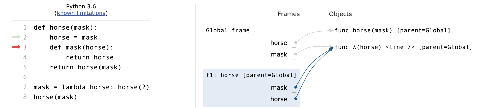
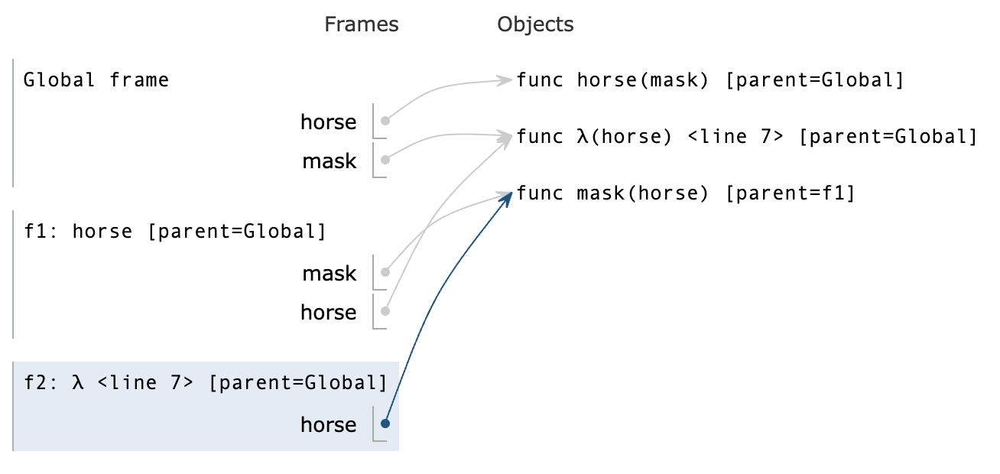
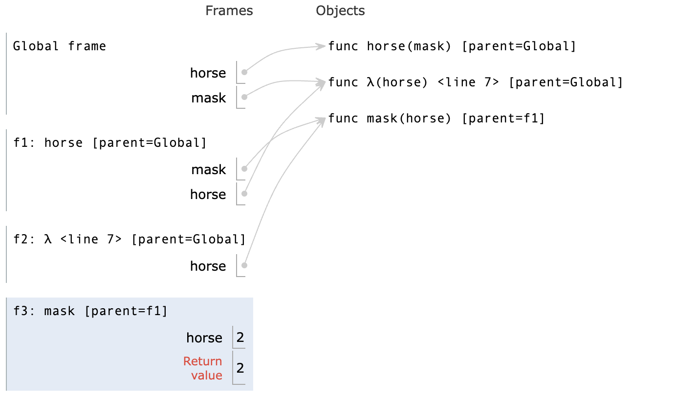
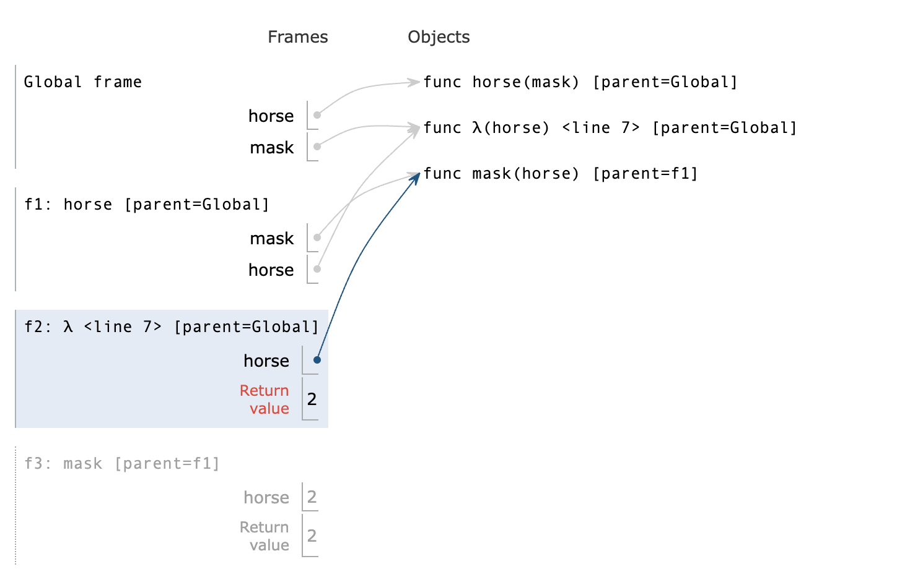
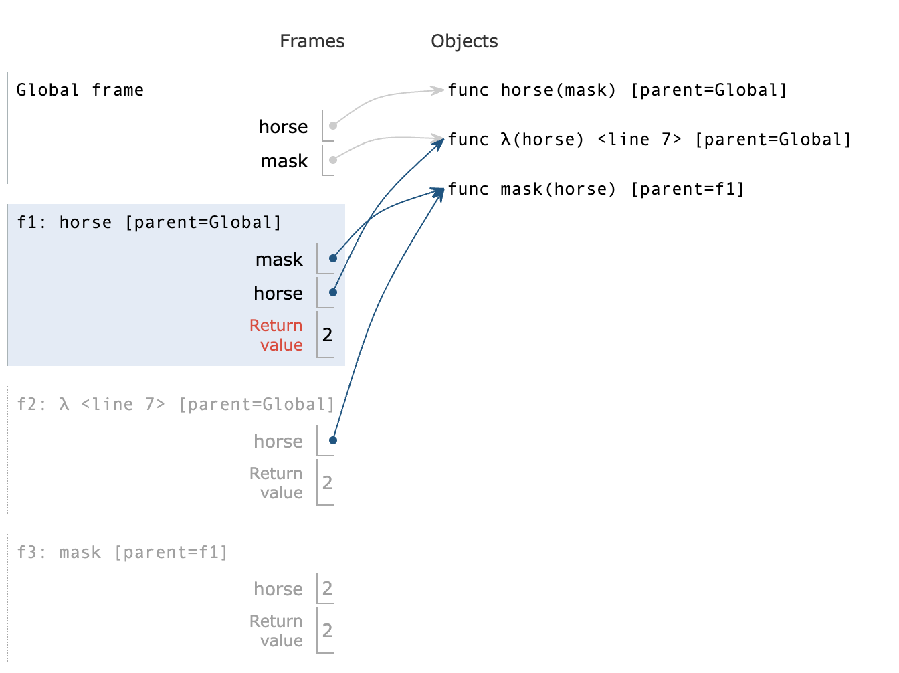
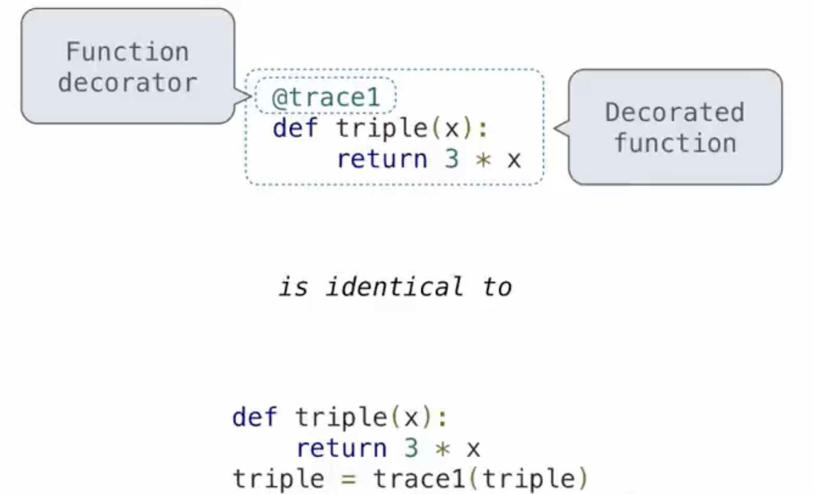
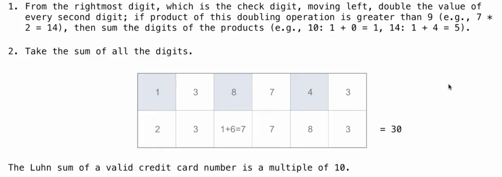
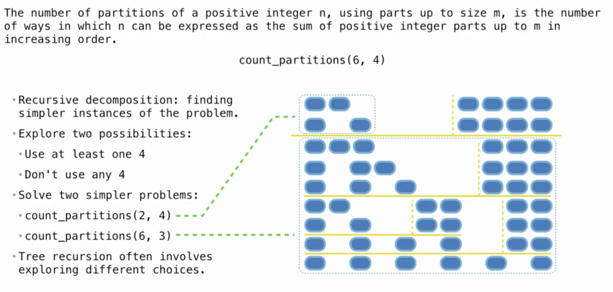
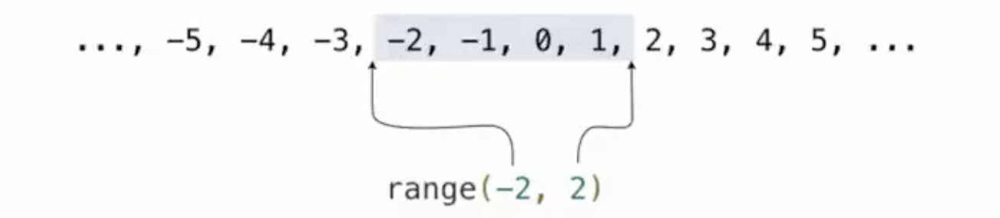
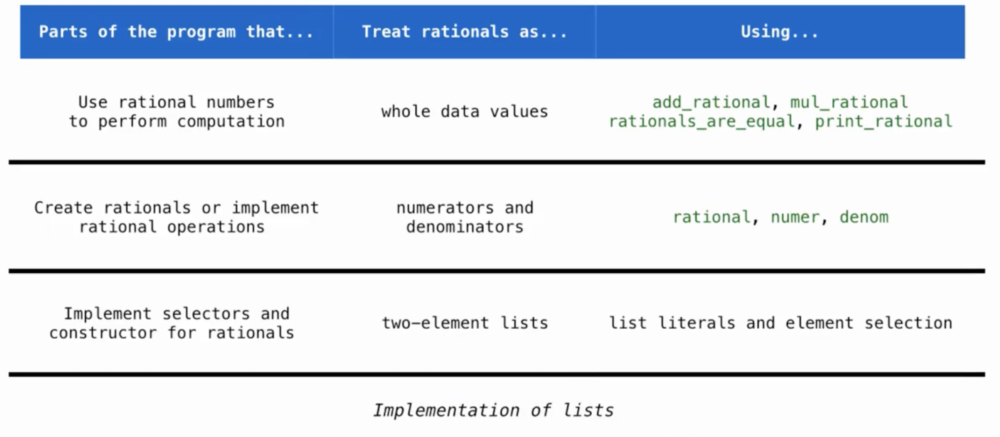

Functions and Lists¶
约 3950 个字 658 行代码 14 张图片 预计阅读时间 21 分钟
Functions¶
Names,Assignment¶
-
在Python中，
Name（名称）是指向对象的引用。在Python的上下文中，几乎所有的东西都是对象，包括函数、变量、数据结构等。Name可以是一个变量名，也可以是一个函数名。当你创建一个变量或函数时，你实际上是在为一个对象创建了一个名称（或标识符），通过这个名称可以访问或调用该对象。 -
在Python中，
assignment（赋值）是将一个值绑定到一个名称（通常是一个变量名）的过程。赋值操作使用等号=来完成。当进行赋值时，等号右侧的表达式会被计算，然后其结果会被绑定到等号左侧的名称上。 -
在上面这个例子中，不同于C，我们将内置函数赋值给变量后，如
f = max，那么f对应的就是max函数的内容，并不会随着max的改变而改变
Defining Functions¶
-
纯函数（Pure Functions） 是这样一种函数，它满足以下两个主要条件：
-
相同的输入总是产生相同的输出。纯函数不依赖于并且也不修改定义在函数外部的状态。这意味着，给定相同的参数，无论调用多少次，纯函数都会返回相同的结果。
-
没有副作用。纯函数不会改变任何外部状态（例如，不修改全局变量，不写入数据库等），也不会有如打印到控制台、写文件这样的操作。
-
-
非纯函数（Non-Pure Functions） 是指不满足上述纯函数条件的函数。它们可能依赖于外部状态，或者在执行过程中改变外部状态（产生副作用）。
- 在Python中，
function signature（函数签名）指的是函数定义的一部分，它包括函数的名称、接收的参数（包括位置参数、关键字参数、可变位置参数、可变关键字参数等）以及有时候包括返回类型的注解。函数签名为调用者提供了函数如何被调用的信息。
-
在这个例子中，函数签名是
greet(name: str) -> str，它告诉我们： -
函数的名称是greet。
-
它接受一个名为name的参数，该参数被注解为str类型。
-
它返回一个str类型的值。
-
d=10并不是为d赋值，而是当没有传入d的值时，会为d默认赋值为10
Print and None¶
-
在Python中，
None是一个特殊的常量，用于表示空值或者无值的状态。它是NoneType类型的唯一值。None经常用于函数返回值，表示函数没有返回任何具体的值。同时，它也常用于变量初始化，以及表示某些对象或变量尚未被赋予具体的值。 -
在Python中，
print是一个内置函数，用于将信息输出到标准输出（通常是屏幕）。它可以接受多个参数，将它们转换为字符串（如果它们不已经是字符串的话），然后输出这些字符串，参数之间默认用空格分隔，最后默认输出一个换行符。同时print函数没有返回值，在调用的时候就会返回None
Boolean Contexts¶
- False Values in Python:
- False
- 0
- ''
- None
- True Values in Python: Anything else
Short Circuiting¶
-
and操作符，Python会先评估左侧表达式，若为False则结果为左侧表达式的值；若为True,则结果为右侧表达式的值 -
or操作符，Python会先评估左侧表达式，若为False则结果为右侧表达式的值；若为True,则结果为左侧表达式的值
Functions(advanced)¶
Locally Defined Functions¶
def make_adder(n):
def adder(k):
return k+n
return adder
"""
>>> add_three = make_adder(3)
>>> add_three(4)
7
"""
-
make_adder(n)定义了一个函数，这个函数内部定义了另一个函数adder(k)。adder函数将其参数k与外部函数的参数n相加，并返回结果。 -
当
make_adder被调用时，比如make_adder(3)，它返回一个adder函数，这个adder函数将会把它的参数和3相加。
注意
- 即使在
adder函数中n值发生了改变，也不会影响n在make_adder中的值，即在adder中的n是个形参
Functions that accept arbitrary arguments¶
- 我们想编写一个接受任意数量的参数的函数，然后使用这些参数调用另一个函数
- 运用 *args 以接受任意数量的参数
>>> def printed(f): ... def print_and_return(*args): ... result = f(*args) ... print('Result:', result) ... return result ... return print_and_return >>> printed_pow = printed(pow) >>> printed_pow(2, 8) ## *args represents the arguments (2, 8) Result: 256 256 >>> printed_abs = printed(abs) >>> printed_abs(-10) ## *args represents one argument (-10) Result: 10 10def make_averaged(original_function, samples_count=1000): """Return a function that returns the average value of ORIGINAL_FUNCTION called SAMPLES_COUNT times. To implement this function, you will have to use *args syntax. >>> dice = make_test_dice(4, 2, 5, 1) >>> averaged_dice = make_averaged(roll_dice, 40) >>> averaged_dice(1, dice) ## The avg of 10 4's, 10 2's, 10 5's, and 10 1's 3.0 """ def averaged(*args): total = 0 for i in range (samples_count): total += original_function(*args) return total/samples_count return averaged
High Order Function¶
高阶函数（High Order Function）是指至少满足下列一个条件的函数：
- 接受一个或多个函数作为参数。
- 返回另一个函数作为结果。
- 高阶函数在函数式编程中非常重要，它们允许函数操作函数，提供了极大的灵活性和表达力。例如，Python中的map和filter都是高阶函数，因为它们接受一个函数作为参数。另一个例子是装饰器（Decorator），它接受一个函数作为输入并返回一个增强版的函数。
- 高阶函数，注意是在调用函数还是在赋值
def cake(): print('beets') def pie: print('sweets') return 'cake' return pie """ >>> chocolate = cake() beets >>> chocolate <function pie at ...> >>> chocolate() sweets 'cake' >>> more_chocolate, more_cake = chocolate(),cake sweets >>> more_chocolate 'cake' """ def snake(x,y): if cake == more_cake: return chocolate else: return x+y """ >>> snake(10,20) <function pie at ...> >>> snake(10,20)() sweets 'cake' >>> cake = 'cake' >>> snake(10,20) 30
Horse and Mask¶
- 形参、frame的绕中绕，搞清每一个frame和它的parent
- 在
global frame中我们定义了两个函数，一个是horse，一个是由lambda表达式构成的mask - 然后调用
horse(mask)，这里是在global下调用的，所以horse和mask就指向上文的两者 - 然后进入
f1: horse,[parent = Global]，开始执行body，执行到horse = mask，呈现下图的关系：  - 在定义了内部的
mask函数后，返回horse(mask)，这时候两者所指对象有所变化：
- 于是进入
f2: λ <line 7> [parent = Global]，在这个函数里horse其实指向之前定义的内部函数[parent = f1]  - 然后因为在
f2里面返回的是horse(2)，所以进入f3: mask [parent = f1]，因而return 2 - 又回到
f2返回2，又回到f1返回2  
{kind=link}
{kind=link}
{kind=link}
{kind=link}
{kind=link}
Lambda Expression¶
- Lambda 表达式，也称为匿名函数，是一种在 Python 中快速定义单行的最小函数的方式。Lambda 函数可以接受任意数量的参数，但只能有一个表达式。这个表达式的计算结果会被这个函数自动返回。
add = lambda x, y: x + y
print(add(5, 3)) ## 输出: 8
is_even = lambda x: x % 2 == 0
print(is_even(4)) ## 输出: True
print(is_even(5)) ## 输出: False
make_adder = lambda x:lambda y:x+y
adder = make_adder(3)
print(adder(5)) #输出：8
- 结合高阶函数和lambda表达式，我们可以写出一些功能强大的函数，比如inverse
def search(f):
x = 0
while True:
if f(x):
return x
x += 1
## 这个函数用来寻找满足条件的x
def inverse(f):
return lambda y:search(lambda x:f(x) == y)
## 这个高阶函数返回一个单参函数search
## 其中向search传入了 f(x) == y 的判断函数
"""
>>> square = lambda x: x*x
>>> sqrt = inverse(square)
>>> sqrt(16)
4
"""
## 当然这个版本只适用于普通的整数，更精确的平方根求法可以用牛顿法或者平方根倒数算法
Currying¶
- Currying 是一种在函数式编程中常见的技术，它指的是将一个多参数的函数转换成一系列使用一个参数的，Higher-Order的函数的过程。
def curry2(f):
def g(x):
def h(y):
return f(x,y)
return h
return g
"""
>>> from operator import add
>>> m = curry2(add)
>>> add_three = m(3)
>>> add_three(2)
5
>>> curry2 = lambda f: lambda: x: lambda y: f(x,y)
...
...
"""
Decorators¶
- 装饰器（Decorator）是 Python 中一个非常强大的功能，允许你在不修改原始函数或方法定义的情况下，给它们添加额外的功能。装饰器本质上是一个函数，它接受一个函数作为参数并返回一个新的函数。使用装饰器可以实现很多功能，比如访问控制、日志记录、测量执行时间等。
- 装饰器的基本语法是在函数定义前使用
@符号加上装饰器的名称。 - 但对于lambda表达式就不能直接使用
@，而是调用Decorator函数 def trace1 (fn): """Returns a version of fn that first prints before it is called fn - a function of 1 argument """ def trace(x): print('Calling',fn,'on argument',x) return fn(x) return trace @trace1 def square(x): return x*x @trace1 def a_function: return 1 """ >>> square(4) Calling <function square at ...> on argument 4 16 """
{kind=link}
Recursion¶
- For Instance
def print_sum(x):
print(x)
def next_sum(y):
return print_sum(x+y)
return next_sum
print_sum(1)(3)(5)
{kind=link}
- 递归函数（Recursion Functions） 是在其定义中调用自身的函数。
- 基本情况（Base Case）：这是递归停止的条件，没有它，递归将无限循环下去。
- 递归步骤（Recursive Step）：在这一步中，函数调用自身，通常是用一组不同的参数。
Mutual Recursion¶
- 互递归（Mutual Recursion） 是指两个或多个函数相互调用对方以实现递归的情况。
Luhn Algorithm¶
-
从右边第二个数字开始，每隔一个数字乘以2。
-
如果乘以2的结果是两位数，则将这两位数相加得到一个单一的数字(e.g. 10 -> 1 + 0 = 1)
-
然后加和所有数字，如果这个总和可以被10整除则是有效的 
{kind=link}
Tree Recursion¶
- 树递归（Tree Recursion） 是一种特殊类型的递归模式，其中一个函数在其执行过程中不止一次地调用自身。每次函数调用自身时，都会创建一个新的分支，在逻辑上形成了一棵树。
{kind=link}
例如：Cascade函数
def cascade(n):
if n < 10:
print(n)
else :
print(n)
cascade(n // 10)
print(n)
"""
>>> cascade(123)
123
12
1
12
123
"""
- Inverse Cascade
"""
1
12
123
1234
123
12
1
"""
## 对于形如这样的inverse_cascade，我们打算把函数拆分成三部分：grow，print，shrink
def inverse_cascade(n):
grow(n)
print(n)
shrink(n)
#然后引入f_then_g函数，来调整函数的前后调用顺序
def f_then_g(f,g,n):
if n:
f(n)
g(n)
#最后定义grow和shrink
grow = lambda n: f_then_g(grow, print, n // 10)
shrink = lambda n: f_then_g(print, shrink, n // 10)
-
Counting Partitions
-
count_partitions(n,m)表示用不超过m的正整数来表示n，其中这些数的排列成非递减的顺序，就叫做n的划分数 def count_partitions(n,m): if n == 0: return 1 #什么都没有也是一种划分 elif n < 0: return 0 elif m == 0: return 0 else: with_m = count_partitions(n-m,m) without_m = count_partitions(n,m-1) result = count_partitions(5,3) ## 1 + 1 + 1 + 1 + 1 = 5 ## 1 + 1 + 1 + 2 =5 ## 1 + 2 + 2 = 5 ## 1 + 1 + 3 = 5 ## 2 + 3 = 5
{kind=link}
- 本质上是一种DFS
- 类似的如 hw03中的
count coinscount coinsdef next_larger_coin(coin): """Returns the next larger coin in order. >>> next_larger_coin(1) 5 >>> next_larger_coin(5) 10 >>> next_larger_coin(10) 25 >>> next_larger_coin(2) # Other values return None """ if coin == 1: return 5 elif coin == 5: return 10 elif coin == 10: return 25 def next_smaller_coin(coin): """Returns the next smaller coin in order. >>> next_smaller_coin(25) 10 >>> next_smaller_coin(10) 5 >>> next_smaller_coin(5) 1 >>> next_smaller_coin(2) # Other values return None """ if coin == 25: return 10 elif coin == 10: return 5 elif coin == 5: return 1 def count_coins(total): """Return the number of ways to make change using coins of value of 1, 5, 10, 25. >>> count_coins(15) 6 >>> count_coins(10) 4 >>> count_coins(20) 9 >>> count_coins(100) # How many ways to make change for a dollar? 242 >>> count_coins(200) 1463 >>> from construct_check import check >>> # ban iteration >>> check(HW_SOURCE_FILE, 'count_coins', ['While', 'For']) True """ def constrained_count_small(total, largest_coin): if total == 0: return 1 if total < 0: return 0 if largest_coin == None: return 0 without_coin = constrained_count_small(total, next_smaller_coin(largest_coin)) with_coin = constrained_count_small(total - largest_coin, largest_coin) return without_coin + with_coin return constrained_count_small(total, 25)
Note
- 利用
next_smaller_coin或next_larger_coin以及 with和without来遍历所有分支
lambda表达式嵌套定义函数
(lambda f: f(f))(lambda f: lambda x: 1 if x == 0 else x * f(f)(x - 1))
(lambda f: lambda k: f(f, k))(lambda f, k: k if k == 1 else mul(k, f(f, sub(k, 1))))
- 想要定义阶乘函数，我们先构想这个阶乘函数由哪些参数组成
- 根据分析，阶乘函数既然要递归调用自身，肯定要传入一个函数，同时还要传入一个整数，因此是两个参数
- 可以设计成双参数函数，或者是高阶函数（第一个例子为高阶函数）
- 下面分析例1:
- 那么我们利用条件判断式得到函数的雏形：
lambda f: lambda x: 1 if x==0 else x*f(f)(x-1) - 现在问题就在于这个雏形函数(记作λ)是 λ()()需要接受两个参数，那么我们就要把他自身传给他
- 于是有了外层的
lambda f: f(f)，这个外层接受 λ 作为参数后，就可以得到一个单参数函数，最后就可以只传入数值
- 那么我们利用条件判断式得到函数的雏形：
Example-sum fun(tree recursion)
-
实现sums(n, m) ，它接受n和最大值m 。它返回含有所有满足条件的子列表的一个列表：
- 子列表和为
n - 子列表中的数最大取到
m - 没有相邻的两个数是相同的
- 两个具有相同数字但顺序不同的列表都应该返回。
- 子列表和为
-
我们注意整个函数最后返回的是一个大列表，即
[[...],[...],...] - 同时这是一个dfs，我们要找到第一个元素和后续列表组合的条件关系
- 先思考边界条件，这个题的构成应该形如counting partitions，随着递归
n会逐渐减小 n < 0则说明此路不通，返回一个元素使得这个列表不会作为子列表，暂未想到记作[?]；n == 0则说明成功，返回一个不影响列表组成的元素，即[[]]
- 先思考边界条件，这个题的构成应该形如counting partitions，随着递归
- 下面我们思考 条件关系
- 面对函数返回的大列表，我们肯定要遍历每个子列表，然后把[k]与之相加
[[k] + rest for rest in sums(n-k,m) if ?]得到雏形- 能加合的情况有两种：1. rest到底了，返回了
[[]]， 2. rest的第一个元素与k不同 [[k] + rest for rest in sums(n-k,m) if rest==[] or rest[0] != k]- 到这里，我们就能反推出上面的
[?]应该为[]，因为这样子rest就不会与[k]加合，自然不产生错误的子列表implementationif n < 0: return [] if n == 0: sums_to_zero = [] # The only way to sum to zero using positives return [sums_to_zero] # Return a list of all the ways to sum to zero result = [] for k in range(1, m + 1): result = result + [[k] + rest for rest in sums(n-k, m) if rest == [] or rest[0] != k] return result
Sequences¶
Lists¶
- 在Python中，列表（Lists）是一种用于存储有序集合的数据结构。列表是可变的，这意味着它们可以在创建后修改。列表中的元素不必是同一类型，使得列表非常灵活和强大。
Container¶
- 在Python中，
in运算符用于检查序列（如列表、字符串、元组等）中是否存在某个元素。如果元素存在于序列中，in运算符返回True；如果不存在，返回False。
in不寻找子序列
For Statement¶
- 在Python中，
for语句用于遍历序列（如列表、字符串、元组等）中的每个元素，对每个元素执行代码块。
Sequence Unpacking¶
- 对于有着固定长度子序列的序列，我们可以进行unpacking
- 但是若有长度不合群的子序列，则会报错
Ranges¶
- 在Python中，
range类型表示一个不可变的连续数字(integers)序列，range()函数用于生成一个数字序列。  -
这么设计是有意义的
- 区间长度: ending index - starting index
- 选择元素: starting index + index
-
range可以转换成一个列表
- `list(range(-2,2))
[-2,-1,0,1]
{kind=link}
List Comprehensions¶
- 在Python中，List Comprehensions（列表推导式）是一种简洁、灵活的构建列表（List）的方法。它允许从一个或多个迭代器快速创建列表，可以应用条件筛选，也可以对每个元素执行操作
Slicing¶
-
在Python中，切片（Slicing）是一种操作，允许你访问序列类型（如列表、元组、字符串等）的一部分元素。切片操作通过指定索引范围来实现，语法如下：
sequence[start:stop:step]start：切片开始的位置。如果省略，默认为序列的开始(0)。stop：切片结束的位置，但不包括这个位置的元素。如果省略，默认为序列的结束（并不是-1，因为取-1就不含最后一个元素）。step：步长，即取元素的间隔。如果省略，默认为1。
-
在Python中索引可以为负数，表示倒数第几个数
-1代表最后一个数，-2代表倒数第二个数
负数步长
- 步长也可为负数，意味着倒着截取切片
- 此时
list[start:stop:-1]start默认为-1stop默认值是序列开始之前的位置，通常可以理解为None或者一个无法表示的值，以确保能够包含序列的第一个元素（如果为空就会取到列表第一个元素）（如果为0则刚好不能取到列表第一个元素）
Example-Max product
-
函数
max_product接受一个列表，然后返回这个列表中非连续元素相乘所能得到的最大结果
-
分析可知，对于第一个元素来说，如果最终结果含它则一定是
s[0]*max_product(s[2:])；如果不含，则是max_product(s[1:])
Sequence Aggregation¶
- 在Python中，有许多内置函数可以将可遍历(iterable)的参数整合为一个值
- sum(iterable, start=0)：计算可迭代对象中所有元素的总和，可选的start值是累加的初始值。
- max(iterable, *[, default=obj, key=func])：返回可迭代对象中的最大值。key参数为一个函数，用于从每个元素中提取一个用于比较的值。
- min(iterable, *[, default=obj, key=func])：返回可迭代对象中的最小值。同样支持key参数。
- all(iterable)：对每个元素调用
bool(x)函数，若都为真则返回True，否则返回False
sum的使用
start是累加的初始值，默认为整数0- 如果我们修改
start的初始值，就可以进行更多类型的加合
max的使用
max函数有两种形式- max(iterable[, key=func]) -> value
- max(a,b,c...[,key=func]) -> value
Strings¶
- 在Python中，字符串（strings）是由一系列字符组成的不可变序列。字符串可以包含字母、数字、符号和空格。
- 表示方法:
- 'This is a string'
- "This is also a 'string'"
- """use three marks to cotain words over lines"""
Length 和 element selection 与lists类似
注意
- 不同于列表取元素，字符串取出的元素仍然是一个字符串
- 在
lists中我们只能一次查找一个元素，但是字符串可以查找连续的字符
-
我们同样可以使用
inandnot in操作
Dictionaries¶
- 在Python中，字典（Dictionaries）是一种内置的数据类型，用于存储键值对的集合。字典是可变的，这意味着你可以在创建后添加、修改或删除键值对。字典中的键必须是不可变类型，如字符串、数字或元组，且每个键在字典中必须是唯一的。值可以是任何数据类型，并且可以重复。
- 使用花括号
{}来表示 - 我们不再使用
index来取出元素，而是利用key key不能是listordictionary(unhashable type)- 字典是由
key构成的序列 - 调用
.values()，我们可以取出dict_values- 这并非一个
list，是一种特殊类型的sequence，但是我们仍然可以进行很多操作 sum,listetc..
- 这并非一个
- 使用花括号
Dictionary Comprehensions
{<key exp>:<value exp> for <name> in <iter exp> if <fliter exp>}
Example-Index Function
- 函数
index接受两个参数key和values，然后接受一个两参数的函数 match - 返回一个字典，包含所有使得match(v,k)为真的键值对
Data Abstraction¶
-
数据抽象（Data Abstraction）是一种编程和设计的方法论，它强调将数据的实现细节隐藏起来，仅通过一组公共的接口与数据交互。这种方法允许程序员在不了解数据的具体实现的情况下，也能够操作数据结构，从而简化了软件开发和维护。
-
我们对于要实现的数据类型，需要层层分装，这样子每层之间互不影响，我们在维护时不跨过边界修改会更容易 
{kind=link}
错误示范
{kind=link}
Trees¶
implementing the tree abstraction
def tree(label,branches=[]):
for branch in branches:
assert is_tree(branch),"branches must be trees!"
return [label]+list[branches]
def label(tree):
return tree[0]
def branches(tree):
return tree[1:]
def is_tree(tree):
if type(tree) != list or len(tree) < 1:
return False
for branch in branches(tree):
if not is_tree(branch):
return False
return True
def is_leaf(tree):
return not branches[tree]
# 斐波那契树
def fib_tree(n):
if n<=1:
return tree(n)
else:
left, right = fib_tree(n-2),fib_tree(n-1)
return tree(label(left)+label(right),[left,right])
Tree processing using Recursion
Iterator¶
- 在Python中，迭代器（iterator）是用作访问各种不同容器中元素的一种方式
iter(iterable)：返回一个基于可迭代对象中元素的迭代器next(iterator)：返回迭代器中的下一个元素list(iterator)：以列表形式列出迭代器中的剩余元素，并且StopIteration
修改容器后迭代器的变化
- 对于列表来说，迭代器的原理其实是遍历所有索引下的元素（从0到末尾）
- 每次调用
next(t)实际上是在increment迭代器指向列表的索引值
for statement in iterator
- 利用for循环遍历迭代器时，迭代器中的index一样会移动，所以就会出现迭代器最后为空的情况
Built-in Functions for iteration¶
map(func,iterable)：返回一个迭代器，其中为iterable中每个元素采用func后的结果（iterable内的元素不会有变化）filter(func,iterable)：返回一个迭代器，其中为iterable中满足 if func(x)的元素zip(first_iter,second_iter)：接受两个iterable，返回 (x,y)元组元素 的迭代器reversed(sequences)：返回反向遍历结果的迭代器- 如果想要查看迭代器的全部内容，可以装入一个容器
list(),tuple(),sorted()
惰性计算
- 如上文提到的
map、filter、zip等函数返回的都是迭代器，它们不会立即执行，而是在迭代时才逐个处理元素。def double(x): print('**',x,'=>',2*x) return 2*x >>> m = map(double,[1,3,5,7]) # assignment后并没有执行double函数 >>> next(m) ** 1 => 2 ** 2 >>> next(m) ** 3 => 6 ** 6 >>> m = map(double,[1,3,5,7]) >>> f = lambda y: if y >= 10 >>> t = fliter(f, m) >>> next(t) ** 1 => 2 ** ** 3 => 6 ** ** 5 => 10 ** 10 >>> list(fliter(f,map(double,[1,3,5,7]))) ** 1 => 2 ** ** 3 => 6 ** ** 5 => 10 ** ** 7 => 14 ** [10,14]
Zip的用法
-
zip(first_iter,second_iter)：接受两个iterable，返回 (x,y)元组元素 的迭代器
-
如果一个iterable比另一个iterable长，
zip只会遍历可以配对的组合，跳过多余的 -
可以传入两个以上的iterable
Generator¶
- 在Python中，生成器（Generator）是一种用于创建迭代器的简单而强大的工具。
- 它们写起来就像是正常的函数，但是使用
yield语句每次返回一个值。这使得函数能够在每次yield被调用时暂停执行，并在下一次从上次离开的地方继续执行。
yield from：允许我们遍历iterator或iterable，简化版的for x in iterator:...
Example-process strings
Example-Partitions
- 和之前的counting_partitions差不多，同样的思路，考虑有m和无m两种情况
- 这一次我们将罗列出所有的可能性
def list_partitions(n,m): if n>0 and m>0: # 含m的情况 if n == m: yield str(m) for p in list_partitions(n-m,m): yield p + '+' + str(m) # 不含m的情况 yeild from list_partitions(n,m-1) """ >>> for p in list_partitions(6,4):print(p) 2 + 4 1 + 1 + 4 3 + 3 1 + 2 + 3 1 + 1 + 1 + 3 2 + 2 + 2 1 + 1 + 2 + 2 1 + 1 + 1 + 1 + 2 1 + 1 + 1 + 1 + 1 + 1 """
Project 1: Hog¶
Project 2: Cats¶
难点:minimum_mewtations的实现
- 最关键的一点，这个题只考究最优的改法的操作数，而不是如何最优
- 所以我们可以在假设这个操作会有贡献数的情况下进行递归
add: 假设add有意义，那么我们只需要考虑typed和source[1:]（增添的字符必须是source[0]）remove: 假设remove有意义，那么我们只需要考虑typed[1:]和source （删去的字符必须是typed[0]）substitute: 假设substitute有意义，那么我们只需要考虑typed[1:]和source[1:]- basic cases:
- 两者相等：操作数为0
- 一空一有：操作数必须是非空者的长度
- 两者首字符相等：进行递归
- limit < 0：我们上方进行操作时，默认操作数加一，那么相应的其实就是
limit会收紧即减一；为防止多余递归，此时返回一个极大值def minimum_mewtations(typed, source, limit): if typed == source: # 如果两个字符串相等，编辑距离为0 return 0 if not typed or not source: # 如果其中一个字符串为空，返回另一个的长度 return max(len(typed), len(source)) if typed[0] == source[0]: # 如果当前字符相同，直接比较剩下的部分 return minimum_mewtations(typed[1:], source[1:], limit) if limit < 0: return float('inf') # 返回一个无限大的数，保证不会多余递归 # 尝试添加、删除、替换操作，每次操作后递归比较剩余部分 add = minimum_mewtations(typed, source[1:], limit - 1) # 在typed前添加一个字符 remove = minimum_mewtations(typed[1:], source, limit - 1) # 删除typed的一个字符 substitute = minimum_mewtations(typed[1:], source[1:], limit - 1) # 替换typed的一个字符 # 返回三种操作中的最小编辑距离 + 1（当前操作） return 1 + min(add, remove, substitute)